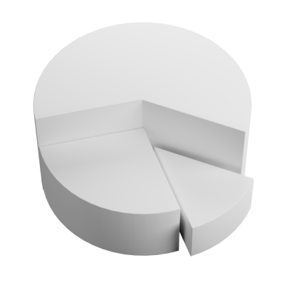
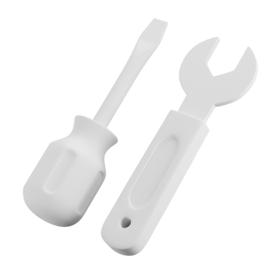

Vikram Rathour
Forward-deployed AI consultant
Embedded in your team, from the first decision to a system your people rely on, and through the months it keeps getting better.
25 years in banking, healthcare and manufacturing. No failed flagship platform.
Not advice from a distance. Deployed in your team.
- I find the problem behind the briefStrategySitting with the people who will use the system, not only the people who sponsor it.
- I build it with your engineersProductionArchitecture, data and working code, through to a system in daily use.
- I grow it until it runs without meMaturityRicher context, evals that prove each step, and more trust only when it's earned.
01Live and production-grade, people in the loop.
- Context
- Your documents and agreed business definitions.
- Evals
- Cleared the test set your experts wrote, before go-live.
- Trusted to
- Suggest. Your team decides while trust builds.
02It drafts. A person approves.
- Context
- + Past decisions and the reasons behind them.
- Evals
- Every human correction becomes a test case.
- Trusted to
- Draft the work. A person signs off each one.
03It decides the routine cases.
- Context
- + The exceptions your experts flagged.
- Evals
- Quality measured on live cases, every week.
- Trusted to
- Routine cases. People review a sample and every exception.
04It acts within limits, and keeps improving.
- Context
- + Whatever changed: products, rules, a new model.
- Evals
- A gate every change must pass, even a model swap.
- Trusted to
- Act within agreed limits. Someone can still say "stop".
Production-ready at launch. Better every month after.
Nothing goes live until it clears the evals your experts set. After launch I stay, adding richer context and new evals, and widening what the system is trusted to do as the evidence builds.
Select a step to see what changes.
The brief said one thing. The real problem was another.
- A tax authority's fraud scores sat unused.Cases closed 50% fasterDeployed with the investigatorsThe real problem: investigators couldn't see why a case scored high. I redesigned their workflow and the interface with them, so every score explains itself.
- Lending analysts refused an AI tool for identity checks.Now widely usedDeployed with the lending analystsThe real problem: the AI made the decision and the analysts just watched. We rebuilt it so analysts decide and the AI brings the evidence.
- Staff overrode a real-time fraud system four times in ten.Overrides 40% → 0Deployed with the fraud operations teamThe real problem: the alerts made no sense to them. I rebuilt the alert logic with them, then re-engineered the platform around their decisions.
The same habit, under the AI.
- A multi-million data platform stalled after six months.One agreed source of truthDeployed with every divisionThe real problem: divisions defined the same numbers differently. A shared glossary was signed off before any architecture, and the platform was designed around it.
- At a bank, every data request took six to eight weeks.8 weeks → self-serveDeployed with twelve business areasThe real problem: one central team was gatekeeper for all twelve. Each area designed its own data, the central team became helpers, and the data mesh followed.
- A 50TB migration team was afraid of being blamed.Zero downtimeDeployed with the migration engineersThe real problem: nobody could see the whole plan. I made every step and risk visible, including how to undo it.

Results that lasted after I left.
I measure the work by what's still running after I hand over.

I don't just architect it. I build it.
Forward-deployed means hands on the keyboard. These are mine.
- sentinel_dqChecks data before AI uses it
- Data platform web appMy data platform, as a working web app
- CKDTrackerKidney-health app I built as a transplant recipient
Why work with me.
- You get me, in the room2–3 clients at a timeTwo or three days a week for six to twelve months, alongside your team. Not a team you've never met.
- No vendor to sellResearch you can readMy advice comes from research I publish openly, like The Production Blueprint, so you can check the reasoning.
- Honest about fitFirst call: 45 minutesIf your team already has what it needs, I'll tell you. AI security testing isn't my field, and I'll introduce you to someone better.
Deploy me where your AI is stuck.
Most conversations begin with a 45-minute call where I listen first, then tell you honestly whether I can help.
Vikram RathourForward-deployed AI consultant · Pune, India
© 2026 Vikram RathourRathour.vikram@gmail.comGitHubWordPress
Read everything in detail